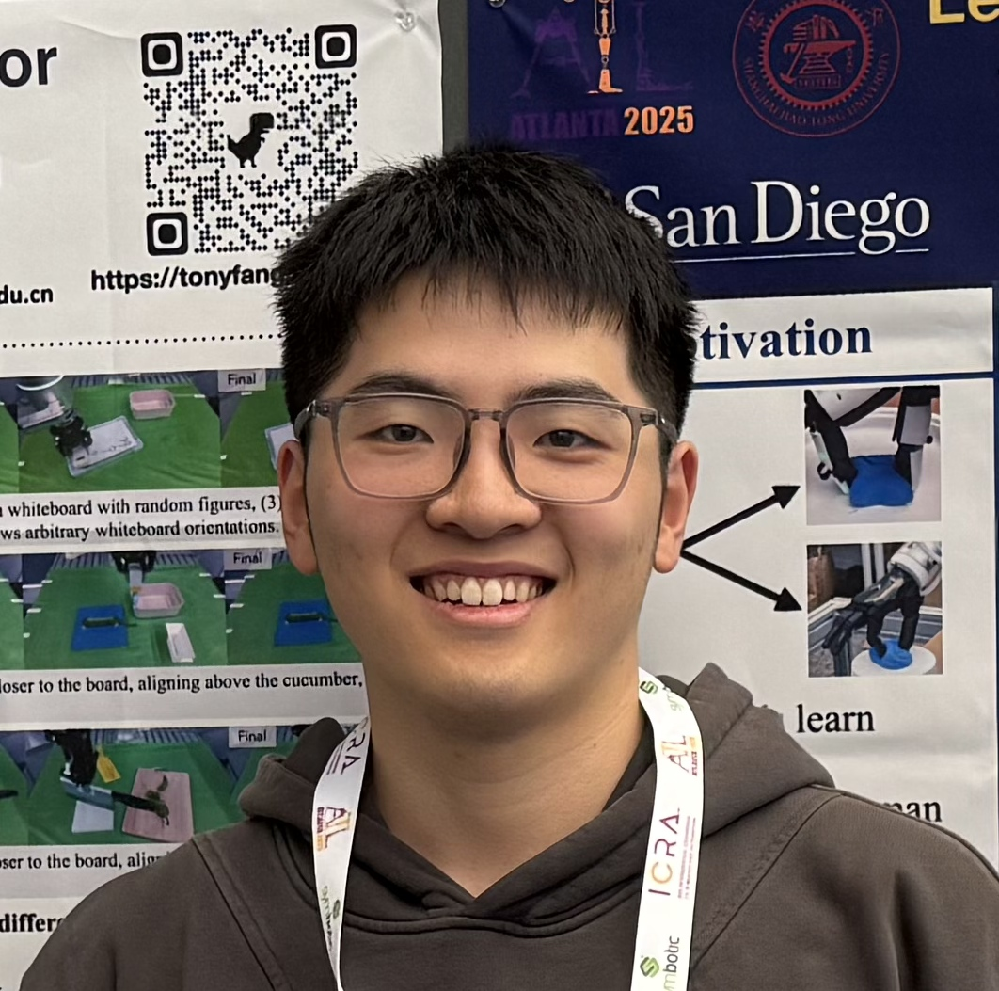

|
Zihao He 何子浩
I am a senior undergraduate student at Shanghai Jiao Tong University, majoring in Electrical and Computer Engineering. I am currently a visiting research intern at UCSD, advised by Prof. Hao Su. Previously, I was a member of SJTU Machine Vision and Intelligence Group (MVIG), advised by Dr. Hao-Shu Fang, and Prof. Cewu Lu.
Email / Google Scholar / X / Github |
 |
{kind=link}
News
[Aug. 2025] AirExo-2 is accepted by CoRL 2025. |
ResearchRepresentative papers are highlighted. * denotes equal contribution. † denotes corresponding author(s). |
|
Ying Feng*, Hongjie Fang*, Yinong He*, Jingjing Chen, Chenxi Wang, Zihao He, Ruonan Liu, Cewu Lu† arXiv, 2025 paper / code comming soon / project page Propose DQ-RISE, which quantizes hand states to simplify hand motion prediction while preserving essential patterns, and applies a continuous relaxation that allows arm actions to diffuse jointly with these compact hand states. This design enables the policy to learn arm-hand coordination from data while preventing hand actions from overwhelming the action space. Experiments show that DQ-RISE achieves more balanced and efficient learning, paving the way toward structured and generalizable dexterous manipulation. |
|

|
Hongjie Fang*, Chenxi Wang*, Yiming Wang*, Jingjing Chen*, Shangning Xia, Jun Lv, Zihao He, Xiyan Yi, Yunhan Guo, Xinyu Zhan, Lixin Yang, Weiming Wang, Cewu Lu†, Hao-Shu Fang† CoRL, 2025 paper / data collection code / policy code / project page Develop AirExo-2, an updated low-cost exoskeleton system for large-scale in-the-wild demonstration collection. By transforming the collected in-the-wild demonstrations into pseudo-robot demonstrations, our system addresses key challenges in utilizing in-the-wild demonstrations for downstream imitation learning in the real world. Propose RISE-2, a generalizable imitation policy that integrates 2D and 3D perceptions, outperforming previous imitation learning policies in both in-domain and out-of-domain tasks, even with limited demonstrations. By leveraging in-the-wild demonstrations collected and transformed by the AirExo-2 system, without the need for additional robot demonstrations, RISE-2 achieves comparable or superior performance to policies trained with teleoperated data, highlighting the potential of AirExo-2 for scalable and generalizable imitation learning. |

|
Zihao He*, Hongjie Fang*, Jingjing Chen, Hao-Shu Fang†, Cewu Lu† RA-L, 2025 IROS, 2025 paper / code / project page / X Propose FoAR, a force-aware reactive policy that combines high-frequency force/torque sensing with visual inputs to enhance the performance in contact-rich manipulation. Built upon the RISE policy, FoAR incorporates a multimodal feature fusion mechanism guided by a future contact predictor, enabling dynamic adjustment of force/torque data usage between non-contact and contact phases. Its reactive control strategy also allows FoAR to accomplish contact-rich tasks accurately through simple position control. |
Selected Awards and Honors |
|
|
The website is built upon this template. |